& Web Designer • Illustrator
Mysteries of the Mesozoic
Services
Educational Design, Web Design,
UX/UI Design, Illustration
Role
Researcher, UX/UI Designer,
Brand Designer, Illustrator
Overview
Mysteries of the Mesozoic is an interactive educational platform designed to spark curiosity about dinosaurs and Earth's ancient history in middle school learners. Through an engaging, scroll-based timeline and an animated continental drift map, users can explore key periods of the Mesozoic Era while collecting dinosaur profiles along the way. The experience blends scientific accuracy with a sense of discovery and adventure, helping users understand not only the dinosaurs themselves, but also the shifting landscapes, evolving ecosystems, and massive spans of time that shaped life on Earth.
Challenge
The primary challenge was creating an educational platform that would genuinely engage middle school students while maintaining scientific accuracy and meeting curriculum standards. Research revealed a critical tension: students found many educational apps either too dry and boring or oversimplified, while teachers struggled to find digital resources that balance entertainment with education. The platform needed to appeal to students who prefer hands-on, interactive activities and game-like challenges while providing teachers with content that aligns with middle school science curriculum.
Research and Analysis
The research phase involved a comprehensive SWOT analysis of three major competitors in the educational dinosaur content space, followed by interviews with teachers, parents, and students to understand their needs, pain points, and motivations.
Competitive Analysis
The competitive analysis examined the existing dinosaur educational content landscape, revealing several key insights. The analysis demonstrated strong brand associations that enhanced credibility and memorability with users. However, a significant gap emerged in interactivity levels, with many offerings providing limited engagement features that failed to maintain long-term user retention, particularly for older elementary and middle school students. Additionally, educational approaches tended to fall into two extremes: either overly basic content targeting younger audiences or entertainment-focused experiences that compromised educational depth. These findings revealed clear opportunities to develop comprehensive educational content that bridges the gap between basic and advanced learning, create interactive features that sustain engagement over time, and focus on broader historical context while maintaining rigorous educational standards.


User Interviews
Interviews with three key stakeholder groups revealed critical insights for design decisions. Teachers emphasized the need for supporting activities rather than complete lesson plans, expressing concerns about excessive screen time while seeking resources that encourage higher-level thinking. Parents prioritized meaningful educational content over busy work, wanting confidence that screen time was productive in a safe, ad-free environment that didn't sacrifice social skills development. Students provided crucial engagement insights, expressing a strong preference for interactive, self-paced learning that felt like a game or adventure. They valued exploring independently while having support available when needed, and were highly motivated by earning rewards and achievements that created a sense of progress.
User Personas
Based on the research and interviews, three primary personas were developed to represent key stakeholder groups. Together, these personas highlight the platform's challenge of serving multiple audiences: students wanting adventure and autonomy, teachers requiring educational rigor within budget constraints, and parents demanding meaningful screen time in safe environments.
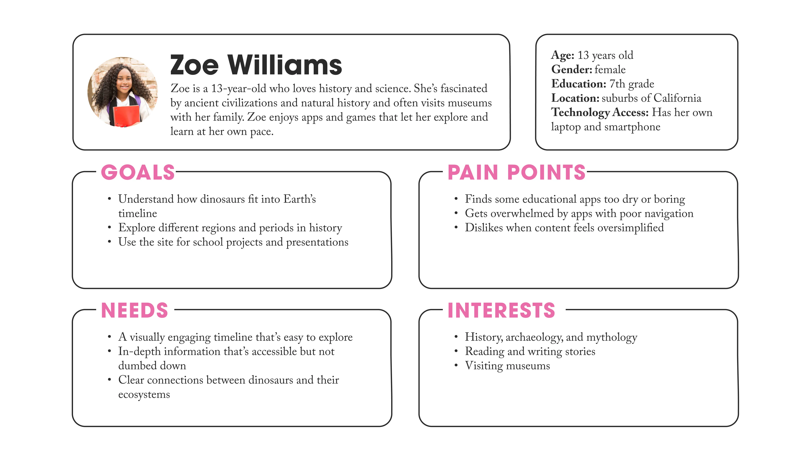
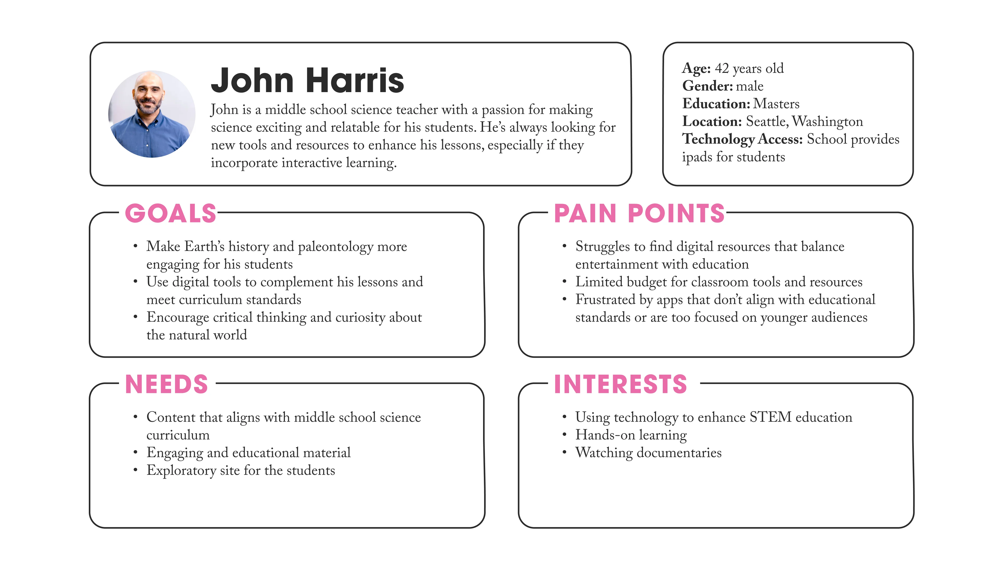
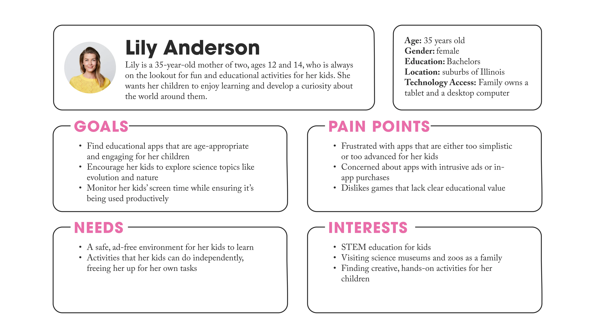
Ideation and Concept Development
Based on user needs identified through research, a concept centered on interactive exploration and discovery was developed. To prioritize features and functionality, a MoSCoW matrix was created. A comprehensive sitemap was developed to establish the information architecture, mapping out all the main sections. To validate this, three user flows were created showing how a student would move through the app in different scenarios. These user flows revealed potential friction points in the navigation and helped refine the dual-navigation system that would appear in the final prototype.
MoSCoW Prioritization
A MoSCoW matrix was created to prioritize features and functionality based on user needs identified through research. This framework helped balance the competing demands of student engagement, educational rigor, and development constraints by categorizing features into Must Have, Should Have, Could Have, and Won't Have categories.
Information Architecture
A comprehensive sitemap was developed to establish the information architecture, mapping out all the main sections including the timeline view, continental drift exploration, dinosaur collection, and educational resources. This sitemap ensured that content was organized logically and that users could move between sections without losing context or orientation.
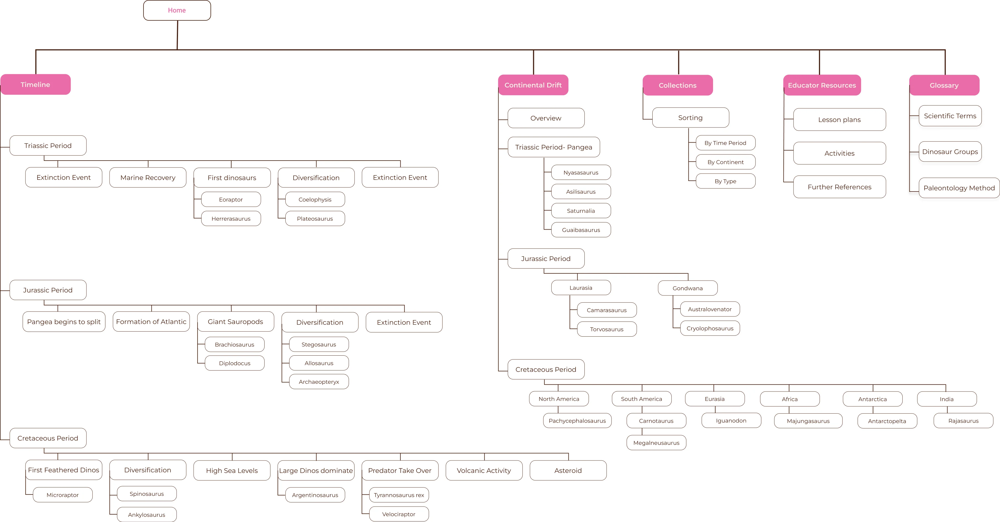
User Flows
Three user flows were created showing how a student would move through the app in different scenarios: exploring the timeline chronologically, investigating a specific time period through the continental drift map, and reviewing their collected dinosaur profiles. These user flows revealed potential friction points in the navigation and helped refine the dual-navigation system that would appear in the final prototype.


Low-Fidelity Prototyping
I began with low-fidelity wireframes to explore navigation structures and information hierarchy before investing in visual design. The wireframing process focused on testing different approaches to timeline navigation, experimenting with how to make continental drift visualization intuitive and engaging, and determining optimal layouts for dinosaur profile cards and information density. Early wireframes explored various navigation patterns, ultimately leading to the dual-navigation system that would appear in the final prototype.
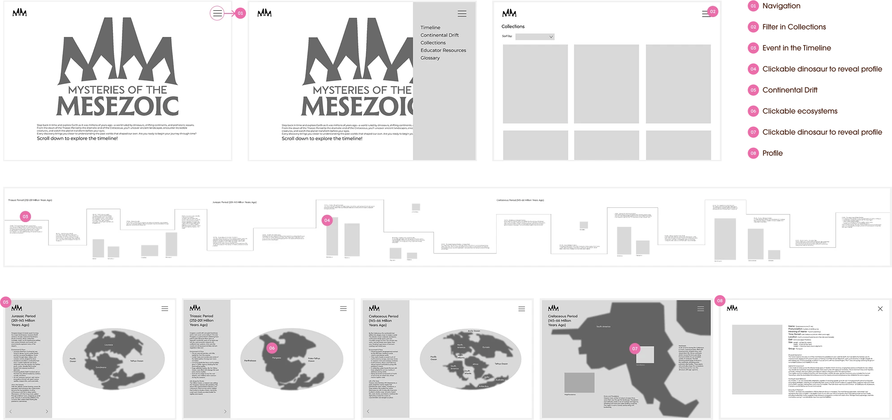
Visual Identity
The visual identity of Mysteries of the Mesozoic blends the charm of vintage exploration with a clean, modern interface. This approach emerged from the need to create something that felt adventurous and discovery-oriented while maintaining the clarity and accessibility middle school users require.
Logo System
The logo combines a stylized dinosaur silhouette with typography that evokes field guides and scientific exploration from the golden age of paleontology. The design balances whimsy with scientific credibility, appealing to both the student desire for adventure and the teacher/parent need for educational legitimacy.
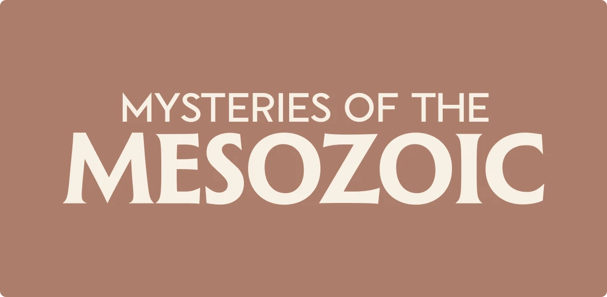
Color Palette
Each time period is color-coded to help users stay oriented as they scroll through prehistoric time. Vibrant earth tones are used, with a main green chosen for the Triassic, orange for the Jurassic, and blue for the Cretaceous, complemented by lighter shades of blue and green for secondary elements. For neutrals, a dark brown, light brown, and tan were selected to ground the palette in natural, prehistoric tones.
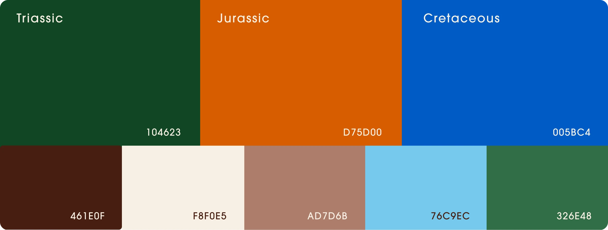
Typography
A flared serif typeface gives titles a timeless, field guide feel that reinforces the exploration theme. This choice evokes vintage scientific illustration and natural history museums, creating an atmosphere of discovery and scholarly adventure. Simple sans-serif text keeps body copy readable for younger users, ensuring that the decorative serif doesn't compromise usability or accessibility.
Illustrations and Visual System
The visual design combines sourced materials with custom elements to create an authentic exploration experience. A subtle crumpled map texture photograph sets the scene of prehistoric discovery, grounding the interface in the aesthetic of vintage field guides. For dinosaur depictions, scientifically accurate illustrations reflect current paleontological understanding. Custom illustrations of animated globes show continental drift, visualizing how Earth's geography transformed over millions of years.
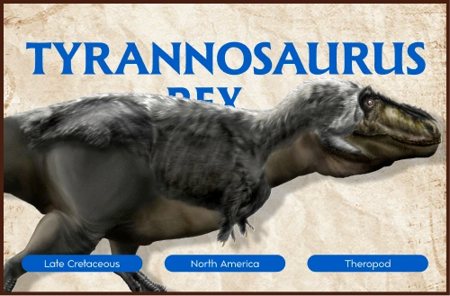
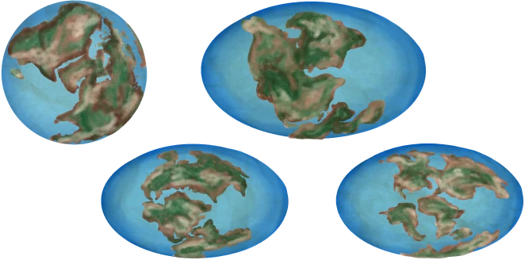
Iterative Prototyping and User Testing
The navigation system evolved through several rounds of prototyping and testing iterations. The initial hamburger menu lacked sufficient visibility and context for the multi-layered experience. Small arrows at the bottom of the text container proved even less effective—users couldn't understand how to navigate between time periods. A color-coded side panel was then tested, but users found navigation in this unexpected location unintuitive. The breakthrough came from adding a fixed sidebar for main navigation with collapsible folders for time periods, creating a clear information hierarchy users immediately grasped.
User testing of the timeline view revealed additional navigation challenges. One user expressed frustration about having to scroll all the way to reach the end of the timeline, while another didn't realize they needed to scroll at all. These insights led to the creation of a color-coded bottom navigation with interactive dots color-coded to the time periods highlighting the key events.
The final iteration addressed a user experience issue: the continental drift page jumped directly into the first time period without context. By allowing folders to collapse completely, a smooth transition sequence was created showing all three time periods with continents visibly shifting before users dove into details. This solution not only eliminated the abruptness but made the exploration experience significantly more engaging and visually compelling.
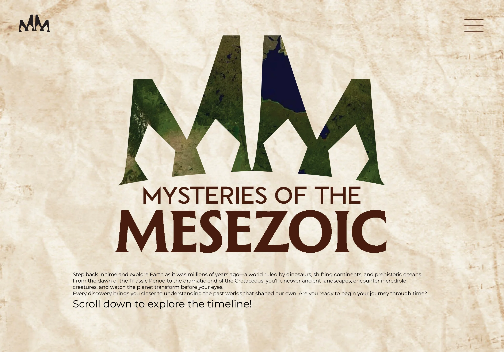


Final Prototype
The final prototype features a sophisticated dual-navigation system designed to support exploration at every step. Custom navigation enables users to orient themselves and move through content in multiple ways, accommodating different learning styles and exploration preferences.
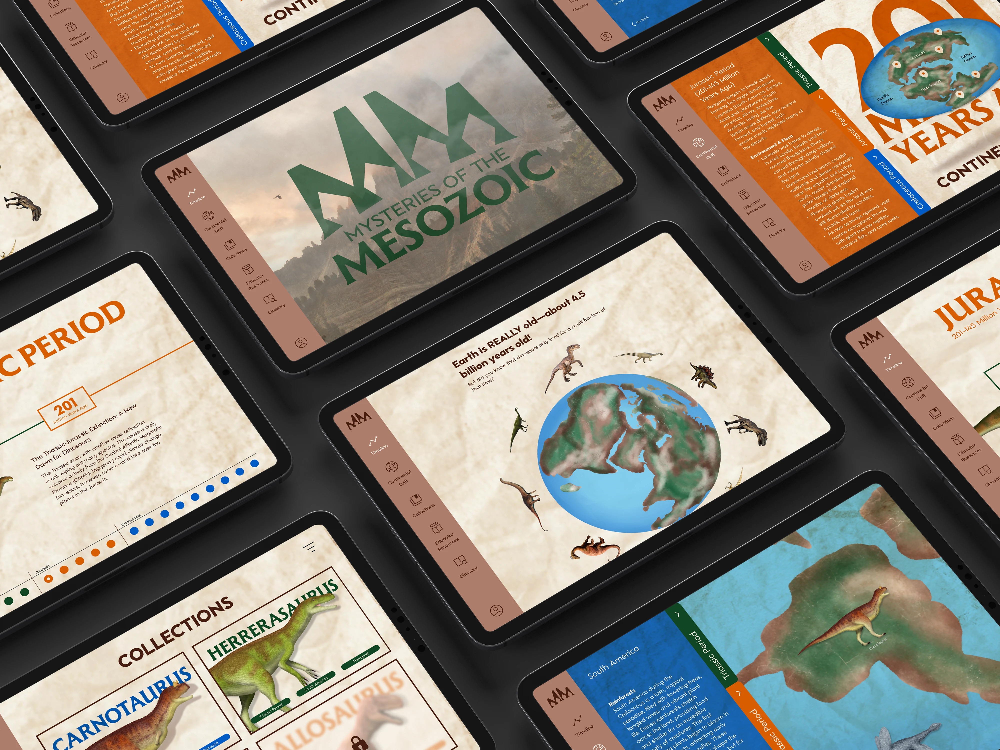
Timeline
The timeline view features a color-coded bottom navigation with interactive dots that highlight key events, allowing users to jump between major moments in prehistoric history. The color-coding matches the time period system, providing consistent visual language throughout the experience. As users explore the timeline, they can click on dinosaurs to unlock and collect detailed profiles, building their personal collection while learning about creatures from different eras.
Regional Exploration
When users click on a pin within the continental drift map, they enter a detailed regional exploration page where they can discover and collect dinosaurs that lived in that specific habitat. Each dinosaur appears with a collectible card showing key information and is saved in the user's personal collection.
Fixed Side Navigation
A persistent side navigation provides quick access to all major sections of the experience. This allows users to jump between the timeline view, continental drift map, their collected dinosaurs, and educational resources without losing their place. The fixed position ensures orientation is always available, addressing the student pain point of getting overwhelmed by poor navigation.
Continental Drift
On the continental drift page, the map animates to show how continents moved over millions of years, making an abstract concept visually concrete and engaging. Collapsible folders let users explore by time period, with clickable pins revealing more about specific regions and the dinosaurs that lived there. This layered approach to information prevents overwhelming users while allowing deep exploration for those who want it.
Collections
As users encounter dinosaurs and add to their personal collection, each unlocks a profile with scientific information including Time Period, Location, Group, Physical Description, and Hunting & Social Behavior. This collection mechanic directly addresses the research finding that students are strongly motivated by collecting items and earning rewards, creating ongoing motivation to explore and learn.
Reflection and Impact
This project reinforced the importance of designing for multiple stakeholders with different, sometimes competing needs. The challenge of creating something engaging enough for students, rigorous enough for teachers, and trustworthy enough for parents required careful balancing throughout the design process. The research phase proved invaluable—the insights from student interviews about game-like elements and collection systems became core features, while teacher feedback about curriculum alignment and parent concerns about meaningful educational value shaped the content strategy and information architecture.